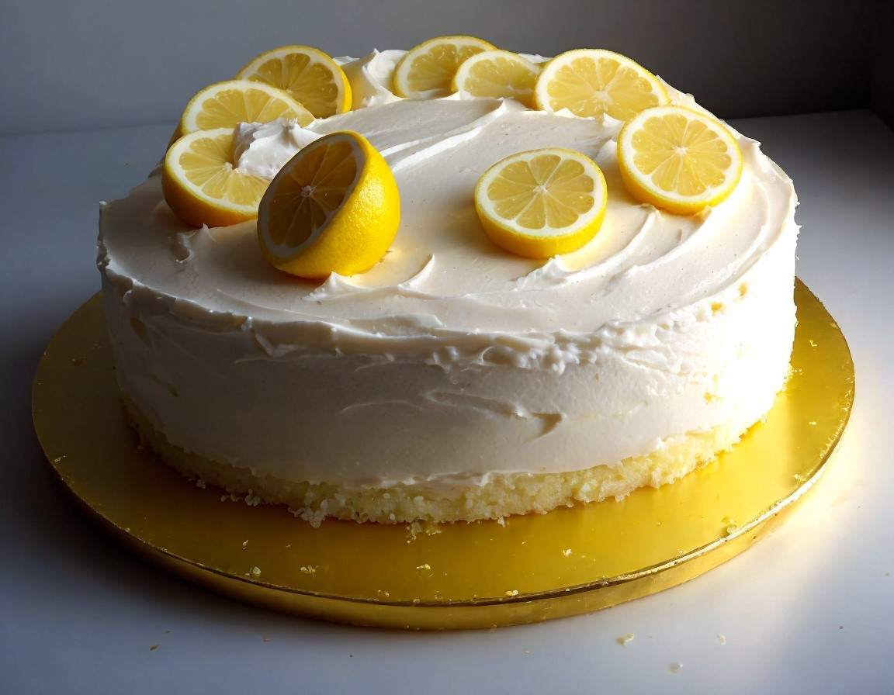
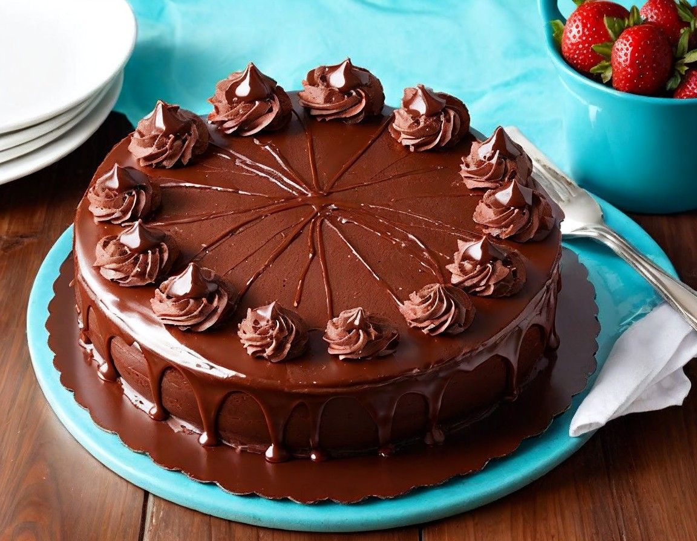
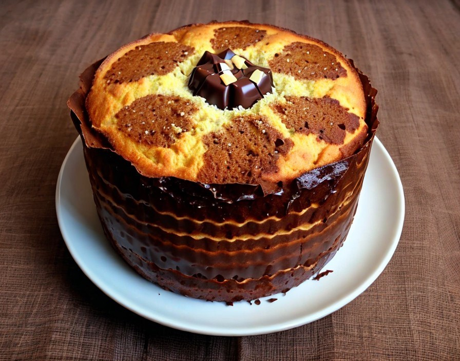

Brincando na cozinha
Você deve estar se perguntando que tipo de receitas vai encontrar por aqui, certo?
Bom, eu separei aqui 4 receitas doces para você fazer em casa,
que usam ingredientes simples e encantam a família durante todo o ano!
Quem sabe futuramente eu não apareço com algo mais profissional para você?! :)
Agora vamos para as 4 receitas escolhidas!
Bolo de limão simples e muito fofinho:

Ingredientes para a massa:
- - 3 ovos.
- - 1 e 1/12 xícara de chá de açúcar.
- - 1/2 xícara (chá) de óleo.
- - 1 pitada de sal.
- - 1/2 xícara (chá) de leite.
- - raspas de limão.
- - 1/2 xícara (chá) de suco de limão.
- - 2 xícaras (chá) de farinha de trigo (sem fermento).
- - 1 colher (sopa) fermento químico em pó.
Modo de preparo:
- - Deixe o forno preaquecendo antes de começar a preparar a massa do seu bolo.
- - Numa tigela, adicione os ovos, o açúcar, o óleo e o sal.
- - Misture tudo com um batedor de arame, fouet ou garfo (essa especificação é importante!).
- - Em seguida, adicione o leite, as raspas de limão, o suco de limão e misture.
- - Depois, adicione a farinha de trigo e misture até ficar bem homogêneo.
- - Por último, adicione o fermento em pó e misture delicadamente.
- - Despeje essa massa em uma forma untada com manteiga e enfarinhada.
- - Leve para assar em forno preaquecido, 180º graus em forno profissional ou 220º em forno convencional, por aproximadamente 40min.
- - Para conferir se está pronto, espete o bolo com uma faca limpa, se sair limpa do bolo, tudo certo!
- - Dica: não abra o forno antes de 30 min no forno e não deixe ar circular na cozinha,se entrar em contato como bolo enquanto está assando,
- irá solar. Então feche as janelas da cozinha antes de abrir o forno :)
Cobertura do bolo de limão:
- - 1 lata de leite condensado.
- - 1 colher (sopa) de creme de leite.
- - 60ml de suco de limão.
Modo de preparo da cobertura:
- - Em uma tigela, misture o leite condensado e o suco de limão<./dd>
- - Mexa bem até ficar bem firme.
- - Em seguida, adicione a colher de creme de leite e misture.
- - Leve para gelar por 20minutos.
- - Após os 20min, cubra o bolo com essa cobertura e está pronto para comer!
Sonho de padaria
Ingredientes para a massa:
- - 3 xícaras e 1/3 de farinha de trigo.
- - 3 colheres (sopa) de açúcar.
- - 10g de fermento biológico seco.
- - 1 ovo.
- - 2 colheres e 1/2 de manteiga ou margarina.
- - 180 mL de leite morno.
- - 1 pitada de sal.
Ingredientes para o recheio:
- - 3 xícaras de leite
- - 1 xícara de açúcar
- - 2 gemas
- - 50g de amido de milho
- - 1 colher de sopa de Essência de baunilha
Ingrediente cobertura:
- - 70g de açúcar de confeiteiro
Modo de preparo da massa do sonho:
- - Coloque em uma tigela metade da farinha de trigo, o açúcar e o fermento biológico e misture.
- - Abra um buraco e acrescente o ovo, a manteiga, o leite morno e o sal.
- - Misture os ingredientes com uma colher.
- - Em seguida acrescente o restante da farinha de trigo.
- - Continue mexendo com uma espátula ou colher.
- - Quando sentir dificuldade para misturar mexa com as mãos limpas.
- - Para facilitar o processo de sova transfira para uma bancada enfarinhada e trabalhe com a massa.
- - Sove por cerca de 15 minutos ou até que fique bem homogênea.
- - Volte a massa para a tigela e cubra com um pano.
- - Deixe crescer em local sem corrente de ar por cerca de 30 minutos ou até dobrar de volume.
- - Após o crescimento despeje a massa na bancada e divida em 18 pedaços iguais, isso irá render sonhos de aproximadamente 40g.
- - Pegue cada parte desta e boleie.
- - Distribua em assadeiras polvilhadas com farinha de trigo deixando um espaço de cerca de 3 cm umas das outras.
- - Tampe com um pano e espere crescer novamente por mais 30 minutos.
- - Preaqueça o forno a 200ºC por 15 minutos e coloque para assar por 15 minutos (se for fritar) e por 20 minutos se preferir sonhos assados.
Modo de preparo do creme para recheio:
- - Peneire as gemas, faça uns furos com a faca e deixe que escorra naturalmente
- - Em uma panela em fogo desligado coloque o amido de milho e o leite, misture muito bem até dissolver por completo
- - Acrescente o açúcar e as gemas peneiradas e misture bem
- - Ligue o fogo e deixe no médio, cozinhe o creme até que engrosse, não pare de mexer, assim que ferver cozinhe por mais 2 minutos
- - Desligue o fogo e acrescente a essência de baunilha, mexa bem e reserve.
- - Depois, corte a massa do sonho no meio e recheie com o creme.
Bolo de Chocolate

Ingredientes para a massa:
- - 4 ovos.
- - 2 colheres (sopa) de manteiga.
- - 2 xícaras (chá) de açúcar.
- - 1 xícara (chá) de leite.
- - 4 colheres (sopa) de chocolate em pó.
- - 3 xícaras (chá) de farinha de trigo.
- - 2 colheres (sopa) de fermento.
Ingredientes para a cobertura:
- - 2 colheres (sopa) de manteiga.
- - 2 latas de leite condensado.
- - 2 colheres (sopa) de creme de leite.
- - 7 colheres (sopa) de chocolate em pó ou achocolatado.
Modo de preparo da massa:
- - Em um liquidificador adicione os ovos, o chocolate em pó, a manteiga, a farinha de trigo, o açúcar e o leite, depois bata por 5 minutos.
- - Adicione o fermento e misture com uma espátula delicadamente.
- - Em uma forma untada, despeje a massa e asse em forno médio (180 ºC) preaquecido por cerca de 40 minutos.
- - Não se esqueça de usar uma forma alta para essa receita: como leva duas colheres de fermento, ela cresce bastante!
- - Outra solução pode ser colocar apenas uma colher de fermento e manter a sua receita em uma forma pequena.
Modo de preparo da cobertura:
- - Em uma panela, aqueça a manteiga e misture o chocolate em pó até que esteja homogêneo.
- - Acrescente o leite condensado e o creme de leite, misture bem até obter uma consistência cremosa.
- - Desligue o fogo e espere esfriar em temperatura ambiente para então cobrir o bolo.
Chocotone hiper macio e cheiroso

Ingredientes:
- - 3 ovos.
- - 3 colheres de manteiga ou margarina.
- - 1 xícara (chá) de açúcar.
- - 1 envelope de fermento biológico seco.
- - 160mL de água morna.
- - 1 colher (chá) de essência de panetone.
- - 300g de gotas de chocolate.
- - 500g de farinha de trigo.
- - 2 forminhas para panetone de 500g.
Modo de preparo:
- - Bata no liquidificador todos os ingredientes, exceto a farinha e as gotas de chocolate.
- - Coloque essa mistura líquida em uma bacia grande com a farinha de trigo e misture com uma espátula.
- - ATENÇÃO: a tendência dessa massa é ficar bem grudenta, não indico sovar com as mãos.
- - Após misturar bem a massa até não ter farinha de trigo visível, cubra a bacia com um pano de forma que não circule o ar.
- - OBS: Eu prefiro tampar com plástico filme e vedar as laterais com durex para que não entre nenhum ar MESMO.
- - Deixe descansando até dobrar de tamanho, varia de 1h a 3h dependendo da temperatura local.
- - Após crescer a massa, destampe e adicione as gotas de chocolate. Misture bem as gotas na massa.
- - Distribua essa massa com as gotas nas forminhas de panetone.
- - Deixe descansar tampado novamente por 1h.
- - Após essa 1h, acrescente uma colher de manteiga no centro da massa para dourar enquanto assa.
- - Leve para o forno pré aquecido por aproximadamente 30min ou até dourar bem em cima.
Estas são as minhas receitas favoritas!
Espero que goste e aproveite muito nas datas festivas e em todo o ano!